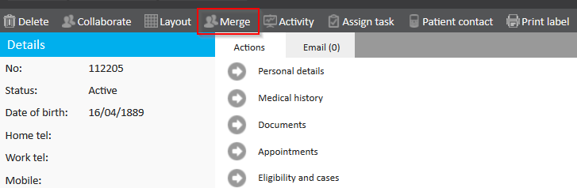
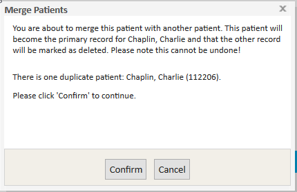

Meddbase contains rules that warn a user when a patient is a duplicate and will alert you when the patient you are creating already exists (Based on first name, last name and date of birth matching). However, should you find that you have duplicated your patient by misspelling a last name or date of birth the ‘Merge’ feature allows you to combine two profiles into one.
Please note, there is now the Duplicate Patient Worklist which provides a centralised space to review and merge duplicate patient records.
This article explains how to merge patient records on an individual basis.
Where Meddbase detects duplicate records, you will be presented with the ‘Merge’ tool on the patient record. Please note that the merge function will only appear if the Name , Surname and DOB match.

Select the primary record (The one which has been used most and contains the most data) and click the merge button to automatically merge the patients.
This will be the Record and patient ID that will be used for the patient from now on, even though all the information from the duplicate patient will be added to the primary ones record.
Warning: Merging two patients cannot be undone, as this also merges the medical record, so please make sure that this is the correct action to take!
